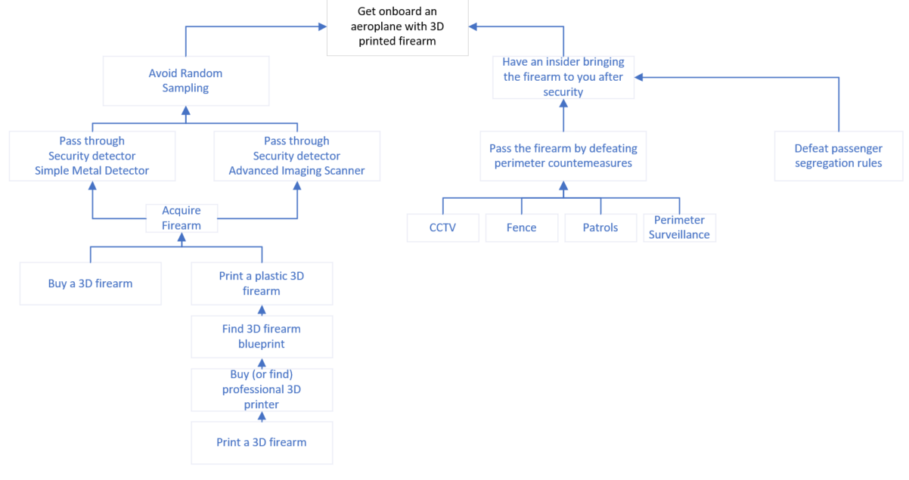

In unit 4 we looked into various tools and resources used in threat modelling and management and applied those in different scenarios through the seminar activities.Additional to the models described in unit 3 the OWASP threat modelling cookbook was presented. There was wide discussion on qualitative vs quantitative methods and the introducion of Open FAIR, Octave, ISO and NIST frameworks.
Unit 4 ActivityRead Shostack (2018) chapters 3 – 5 (that cover STRIDE and DREAD, Attack Trees and Attack libraries) as well as Spring et al (2021) (that discusses the history and some failings with CVSS) and then create a threat model based on one of the following scenarios:
- A large international airport based in the United States of America.
- A large international bank based in the UK.
- A large nuclear power station in France.
For this activity I chose a somewhat courageous scenario based on a large international airport in the USA. In the particular example I did not focus on IT but on security and the objective of the attack is to board a plane with a 3D printed firearm. I wrote this attack tree after reading this article stating that the TSA has found 3D printed guns at airport checkpoints 4 times since 2016. As I have a background in the industry I decided to try to map a potential attack on the attack tree below. It was an interesting exercise as I thought that I can quickly create such a diagram without too much effort but as I started drawing I started thinking about the different attack vectors and interdependencies between actors in the system and then I came up with much more content than what I originally thought. I was luckly that I picked a relatively simple scenario which resulted in somewhat decent tree and not something extremely complex which could extend over several pages. At the end of the day it didnt matter at all that the context was not IT as through the exercise I think I understood how powerfull can attack trees be.

Description:
The two main branches of the tree are either an individual bringing
a 3D firearm onboard illegaly himself or having an accomplish working
as an insider in the airport and bringing the firearm to our passenger
after he goes through security. In the first case there is the obvious
difficulty of acquiring such a firearm as it either needs to be bought
or constructed using advanced 3D printer devices. The latter is
preferred as 3D firearms contain some metalic parts which would trigger
a metal detector. Note that in this scenario the functioning of the
firearm is not of concern, a 3D printed gun could potentially be used
to hijack a plane by taking hostage a passenger and it is quite likely
that a properly 3D printed firearm can fire at least once succesfully
injuring or killing a passenger.
The second branch presuposses the existence of an insider which brings the firearm to out passenger after the passenger goes through security checks. This is also not easy as employees are also screened with metal detectors and other devices and they are also subjected to background checks and security clearances. The alternative would be for the insider to violate the physical security of the airside by throwing for example the firearm over the fence or finding another way to bring it inside undetected. CCTV, fences, patrols, and surveillance of the perimeter are some effective countermeasures. Additionally we can also consider that a typical employee working inside the airport (eg. check-in agent) would have great difficulty walking undetected to the fence to pick up a firearm which he dropped before his shift started.
The most probable scenario would be for a passenger printing his own 3d firearm , going to the airport and selecting a queue in which there is a simple metal detector and not an advanced imaging scanner. Then he would only have to be lucky to avoid the random sampling of the metal detector.
References
Bartholomew, E (2010). Airport And Aviation Security, CRC Press Taylor and Francis Group. USA.Qualls, K. (2018). TSA Confident It Can Detect 3D-Printed ‘Ghost Guns’, https://theglobepost.com/2018/08/03/tsa-3d-printed-guns/ [Accessed on 04/05/2022]